<title>New Look Reel</title>
<meta name="claude:viewport-fit-sides" content="cover">
<style>
/* One column of plain sections on the app's own Slate: the films first, then what they were made from. */
:root {
  --bg: #0f151b; --surface: #1b2126; --line: #2b333b; --text: #f6f8fc; --muted: #b4bbc7; --gold: #ffd98a; --zone: rgba(255, 110, 110, 0.38);
  --font: system-ui, -apple-system, "Segoe UI", Inter, Roboto, sans-serif;
  color-scheme: dark;
}
@media (prefers-color-scheme: light) {
  :root:not([data-theme="dark"]) { --bg: #f6f8fb; --surface: #ffffff; --line: #d9dee5; --text: #10161c; --muted: #55606c; --gold: #7a5a0c; --zone: rgba(200, 30, 30, 0.34); color-scheme: light }
}
:root[data-theme="light"] { --bg: #f6f8fb; --surface: #ffffff; --line: #d9dee5; --text: #10161c; --muted: #55606c; --gold: #7a5a0c; --zone: rgba(200, 30, 30, 0.34); color-scheme: light }
body { background: var(--bg); color: var(--text); font: 16px/1.5 var(--font); }
main { max-width: 60rem; margin: 0 auto; padding-block: 2.5rem 4rem; padding-left: max(16px, env(safe-area-inset-left, 0px)); padding-right: max(16px, env(safe-area-inset-right, 0px)); display: grid; gap: 3rem; }
h1 { font-size: 2rem; line-height: 1.15; margin: 0; text-wrap: balance; }
h1 b { color: var(--gold); font-weight: inherit; }
h2 { font-size: 1.25rem; line-height: 1.3; margin: 0 0 1rem; }
p, ul { margin: 0; max-width: 65ch; }
.lede { color: var(--muted); margin-top: 0.5rem; }
ul { padding-left: 1.2rem; display: grid; gap: 0.35rem; }
.films { display: grid; grid-template-columns: repeat(auto-fit, minmax(15rem, 1fr)); gap: 1.5rem; max-width: 44rem; }
figure { margin: 0; min-width: 0; }
.frame { position: relative; aspect-ratio: 9 / 16; max-width: 100%; background: #000; border-radius: 12px; overflow: hidden; }
.frame video { display: block; width: 100%; height: 100%; }
.frame::after { content: ""; position: absolute; inset: 0; pointer-events: none; opacity: 0; background: linear-gradient(to top, var(--zone) 0 20%, transparent 20%), linear-gradient(to left, var(--zone) 0 13%, transparent 13%), linear-gradient(to bottom, var(--zone) 0 12.3%, transparent 12.3%); }
.zones .frame::after { opacity: 1; }
figcaption { color: var(--muted); font-size: 0.875rem; margin-top: 0.5rem; font-variant-numeric: tabular-nums; }
figcaption strong { color: var(--text); font-weight: 600; }
.row { display: flex; flex-wrap: wrap; gap: 0.5rem 1.25rem; align-items: center; margin-top: 1rem; }
label { display: inline-flex; gap: 0.5rem; align-items: center; min-height: 44px; cursor: pointer; }
input { accent-color: var(--gold); width: 1.1rem; height: 1.1rem; }
:focus-visible { outline: 2px solid var(--gold); outline-offset: 2px; }
.covers { display: grid; grid-template-columns: repeat(auto-fit, minmax(9rem, 12rem)); gap: 1.5rem; }
.covers img, .shots img { display: block; width: 100%; height: auto; border-radius: 10px; background: var(--surface); }
.shots { display: grid; grid-template-columns: repeat(3, minmax(0, 1fr)); gap: 1.5rem 1rem; max-width: 44rem; }
.shots h3 { grid-column: 1 / -1; font-size: 1rem; margin: 0.5rem 0 -0.75rem; }
dl { margin: 0; display: grid; grid-template-columns: max-content minmax(0, 1fr); gap: 0.35rem 1.25rem; max-width: 65ch; }
dt { color: var(--muted); }
dd { margin: 0; }
code { font: 0.875rem/1.4 ui-monospace, "Cascadia Mono", Consolas, monospace; overflow-wrap: anywhere; }
</style>
<main>
  <header>
    <h1>Meta<b>Blend</b> has a new look</h1>
    <p class="lede">Two reels to check, English and German. 1080 × 1920, 30 frames a second, 19.9 seconds, H.264, no sound. Nothing is posted.</p>
  </header>

  <section>
    <h2>The films</h2>
    <div class="films" id="films">
      <figure>
        <div class="frame"><video controls playsinline preload="metadata" poster="metablend-new-look-en-cover.png" src="metablend-new-look-en.mp4"></video></div>
        <figcaption><strong>English</strong> · metablend-new-look-en.mp4 · 1.9 MB</figcaption>
      </figure>
      <figure>
        <div class="frame"><video controls playsinline preload="metadata" poster="metablend-new-look-de-cover.png" src="metablend-new-look-de.mp4"></video></div>
        <figcaption><strong>Deutsch</strong> · metablend-new-look-de.mp4 · 1.9 MB</figcaption>
      </figure>
    </div>
    <div class="row">
      <label for="zones"><input type="checkbox" id="zones"> Show what Reels and TikTok cover</label>
    </div>
    <p class="lede">Red marks the top strip, the bottom fifth and the right edge. All text sits outside it; the lower end of the phone runs under it on purpose.</p>
  </section>

  <section>
    <h2>What to check</h2>
    <ul>
      <li>The wording, in both languages: the title, the three stage names, the three close-up lines and the end card.</li>
      <li>The order: the forecast in three stages, the summit page in three stages, then the first start, the search field and the week.</li>
      <li>The end card stays for two seconds: metablend.app, the free line, December for iOS and Android.</li>
      <li>The cover is the frame at one second, the title over the new look.</li>
    </ul>
  </section>

  <section>
    <h2>Covers</h2>
    <div class="covers">
      <figure>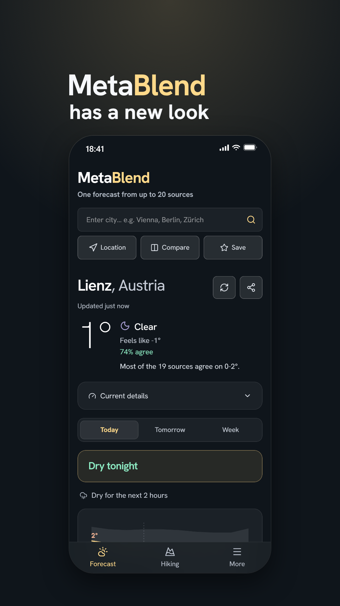<figcaption>metablend-new-look-en-cover.png</figcaption></figure>
      <figure>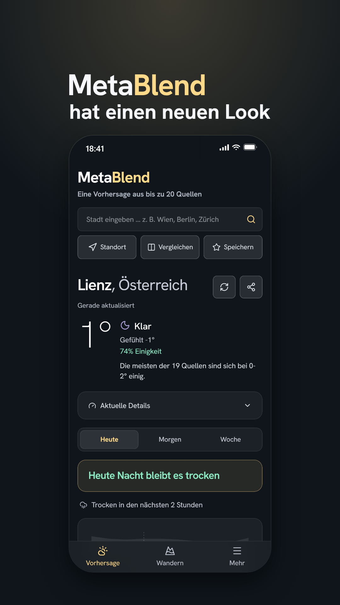<figcaption>metablend-new-look-de-cover.png</figcaption></figure>
    </div>
  </section>

  <section>
    <h2>Stage screenshots</h2>
    <p class="lede">The raw pictures in <code>shots/</code>, 1170 × 2532, for the carousel. Left to right: Before, Slate, Now.</p>
    <div class="row" role="radiogroup" aria-label="Language of the screenshots">
      <label for="lang-en"><input type="radio" name="lang" id="lang-en" value="en" checked> English</label>
      <label for="lang-de"><input type="radio" name="lang" id="lang-de" value="de"> Deutsch</label>
    </div>
    <div class="shots" id="shots">
      <h3>The forecast, Lienz</h3>
      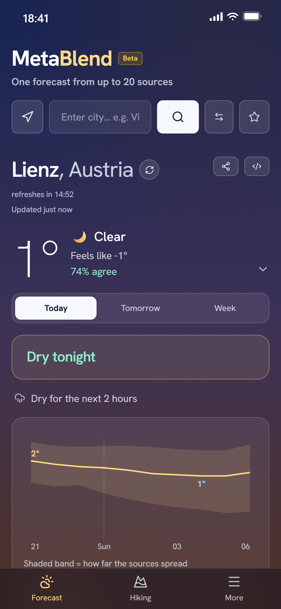
      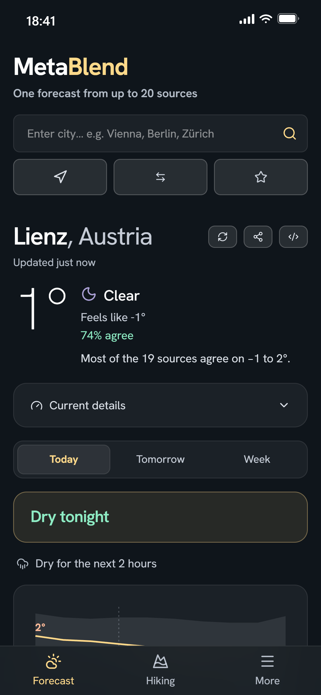
      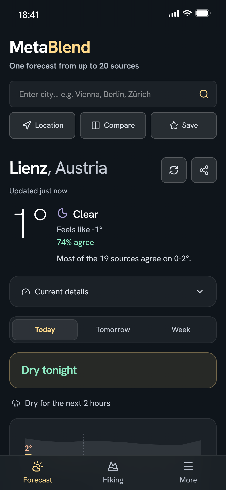
      <h3>The summit page, Hochstein, Tomorrow</h3>
      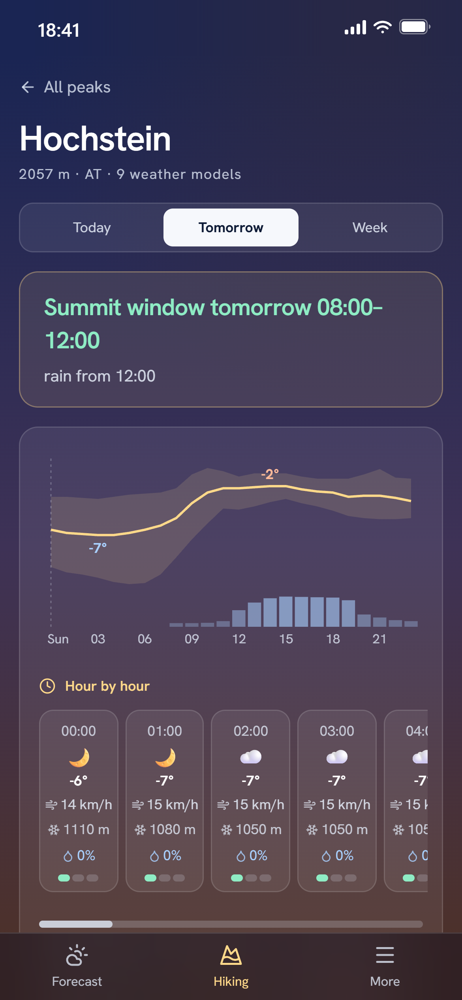
      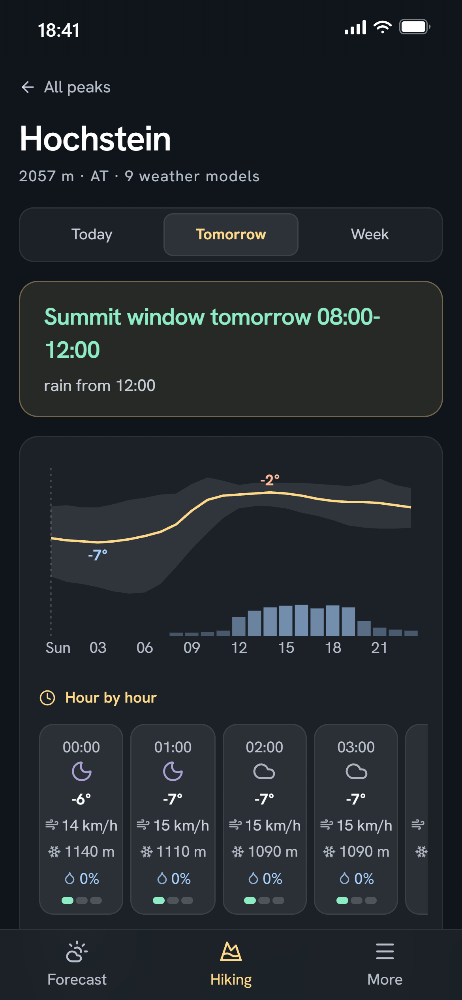
      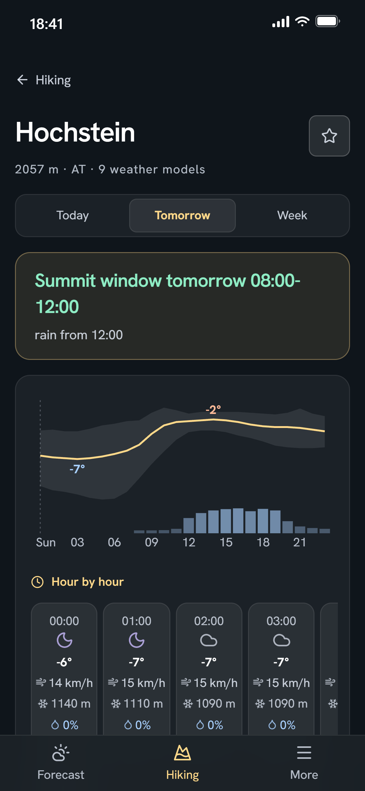
      <h3>The summit page, Week</h3>
      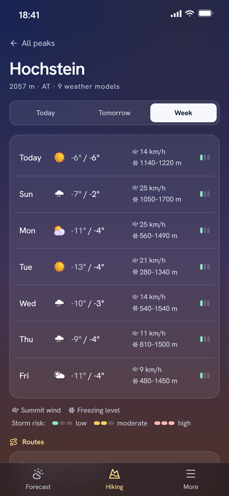
      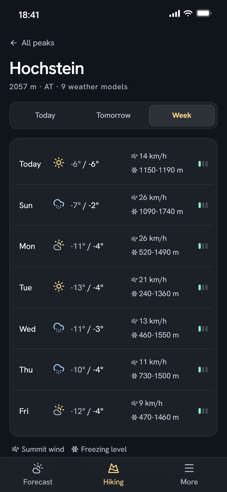
      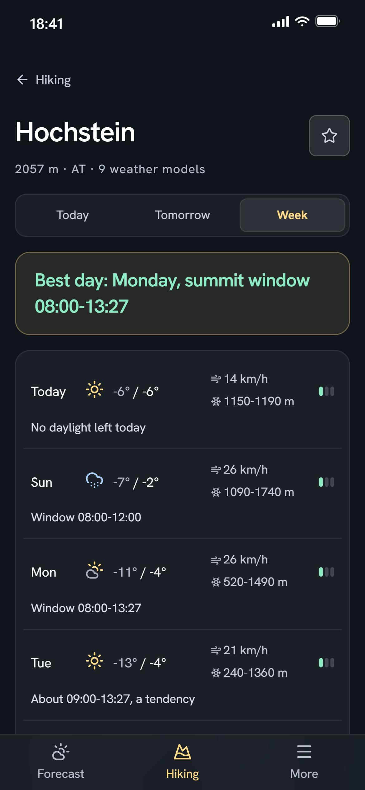
      <h3>The first start, Now only</h3>
      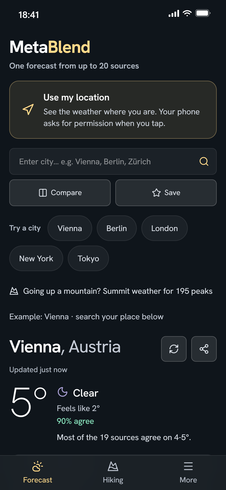
    </div>
  </section>

  <section>
    <h2>How the pictures were made</h2>
    <dl>
      <dt>Before</dt><dd>Commit <code>48603a1</code> of 7 November, the last one whose page wore the weather sky. Its sunrise sky is switched on: the sky followed the hour, and the pictures were taken at night.</dd>
      <dt>Slate</dt><dd>Commit <code>50bc282</code> of 17 November, solid Slate before the changes of 20 November.</dd>
      <dt>Now</dt><dd>Main, commit <code>967e434</code> of 21 November.</dd>
      <dt>All three</dt><dd>Local builds on the dev database, one at a time, app view, dark, German and English, 21 November 2026 between 21:44 and 21:57. The status bar with 18:41 is drawn on.</dd>
      <dt>Again</dt><dd><code>scripts/brand/reel-shots.mjs</code> in MetaBlend, <code>scripts/render-new-look.mjs</code> in the Remotion project my-video. The README beside this page has the commands.</dd>
    </dl>
  </section>
</main>
<script>
  const shots = document.getElementById('shots'), films = document.getElementById('films')
  const show = lang => shots.querySelectorAll('img').forEach(img => { img.src = `shots/${img.dataset.shot}-${lang}.png` })
  document.querySelectorAll('input[name=lang]').forEach(radio => radio.addEventListener('change', () => show(radio.value)))
  document.getElementById('zones').addEventListener('change', e => films.classList.toggle('zones', e.target.checked))
  show(document.querySelector('input[name=lang]:checked').value)
</script>
